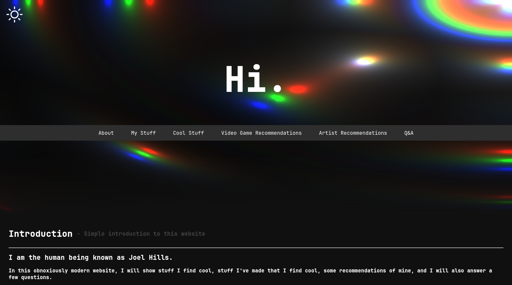
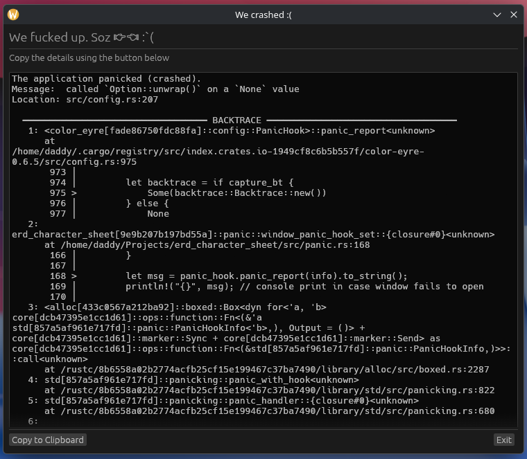
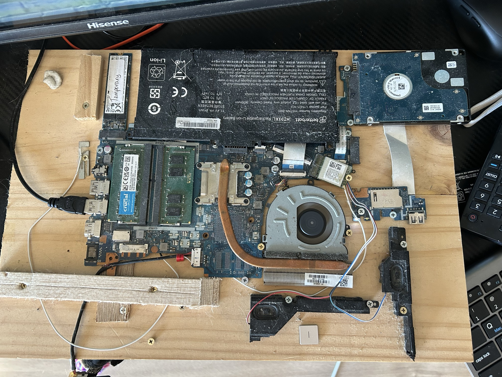
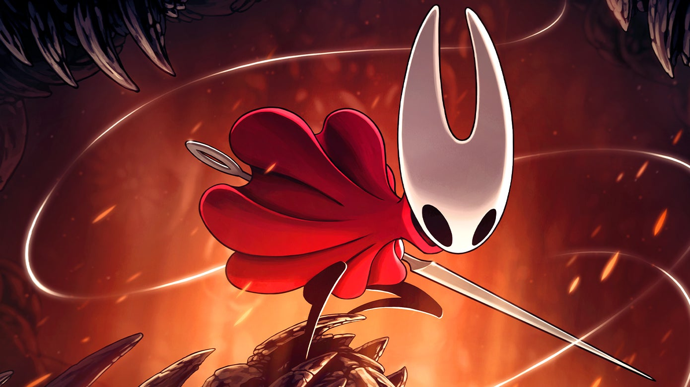
It took 7 years to make - and it shows. It's HARD but very rewarding. Also it's made by Australians, so if complicit nationalism is your jam, then give this a try.
Image Attribution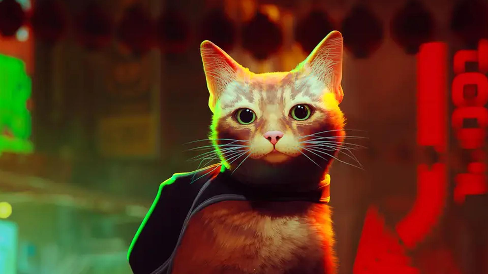
A game by cat lovers, for cat lovers. Almost got cancelled because the cats weren't cooperating, but they eventually got them to behave. If you like cats and cyberpunk, give this a go.
Image Attribution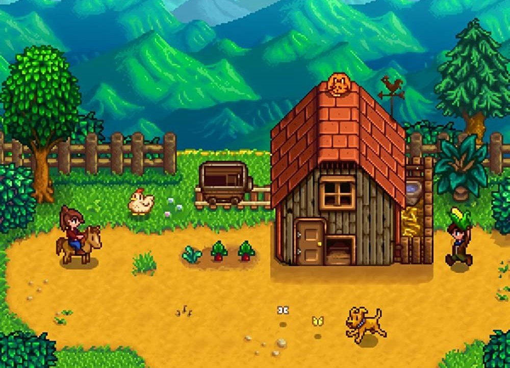
A cozy farming simulator made with the sole purpose of making you envy the farmers in the countryside. Some complain that it can get quite chore-heavy, but that's because it's a simulator you fucking dumbass. It takes creative liberties where it matters to give you a more enjoyable experience.
Image Attribution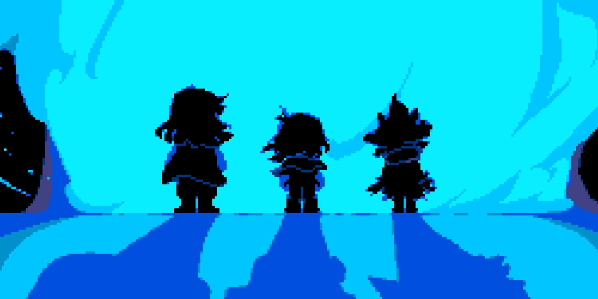
"Oh DeAr It'S pIxEl ArT tHeReFoRe TeRrIbLe!" You better cut that attitude or I'll rip off your balls. This game is far more than what it's art suggests, and has a compelling story that spans it and its predecessor, Undertale. Also the music is top-tier. Even if you don't play the game, you'll definitely enjoy the soundtrack.
Image Attribution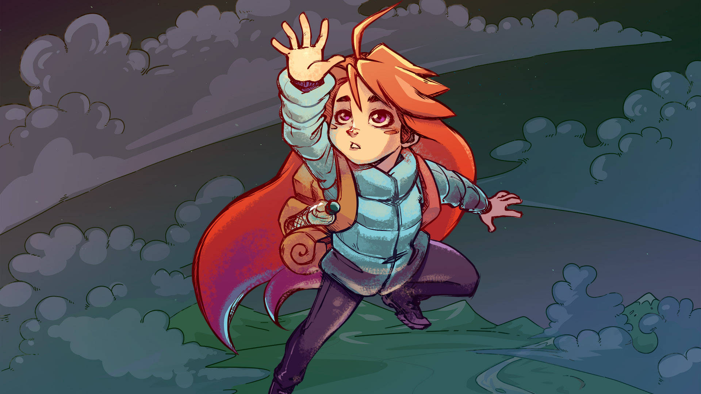
A platformer game that gained its fame for being highly tuned, and having basically no skill ceiling. The sky isn't the limit for the Celeste fanbase. It combines a low-poly, pixel art, and sketchy style that works incredibly well for what it's trying to achieve. Also the protagonist is trans, so that's always a plus.
Image Attribution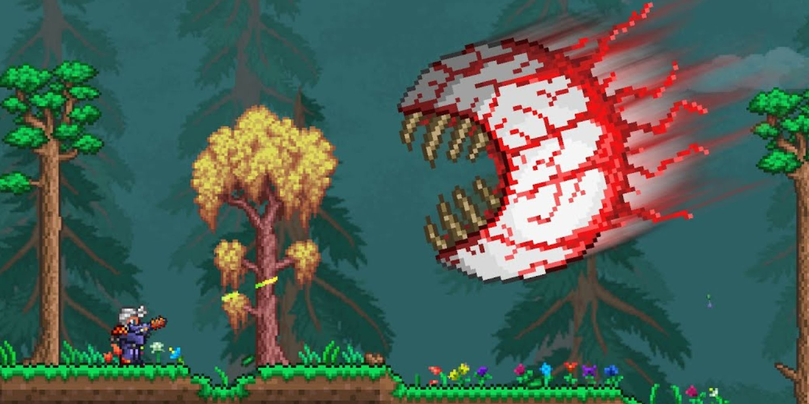
A 2D sandbox with perhaps the highest "content per dollar" ratio. There is SO much content in this game, yet its price hasn't gone up over the years. With 33 bosses, and over 5,000 items, there's something for everyone here, if those someones like 2D sandbox games. Which isn't everyone. Where am I going with this?
Image Attribution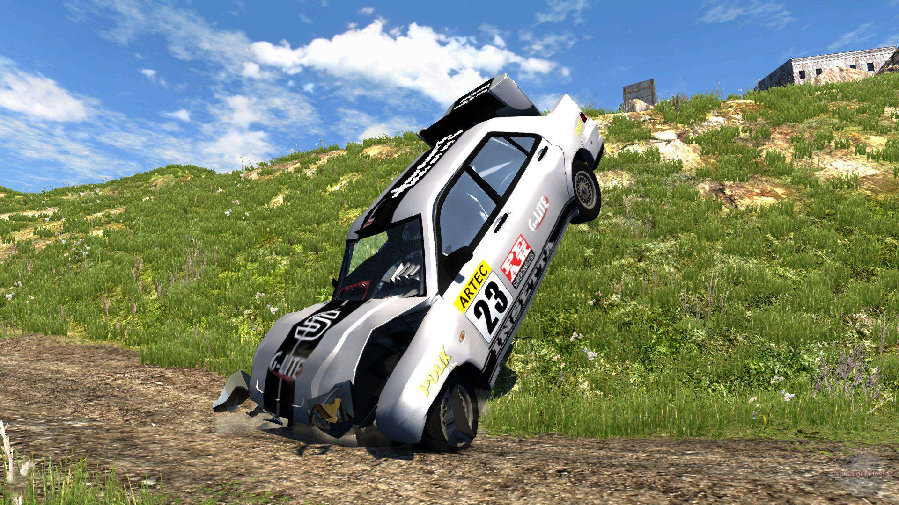
A world-class 3D softbody physics engine that just so happens to also be a video game. It can realistically simulate the complex effects of not paying attention while cruising on the M1 and smashing your favourite AU Falcon.
Image Attribution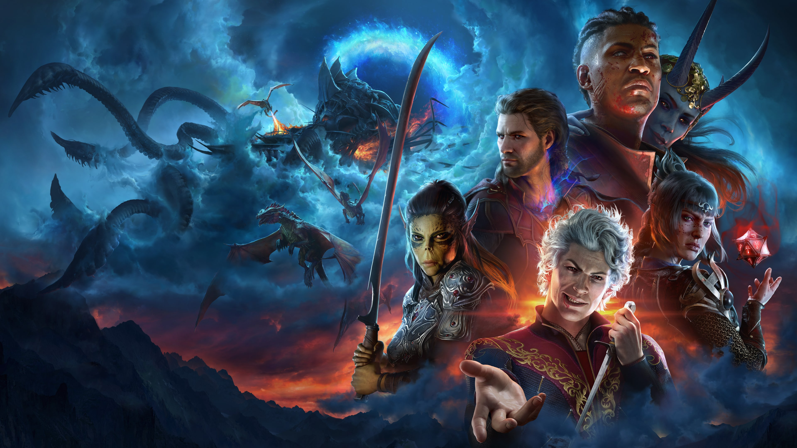
The only AAA game in the last 15 years made by a studio who actually gives a fuck. This game is the perfect mixture of fun mechanics, beautiful graphics, quick wit, and a sprinkling of fleeting horniness. This game is also massive, and well worth the upfront cost, especially after mod support upped its replayability tenfold.
Image Attribution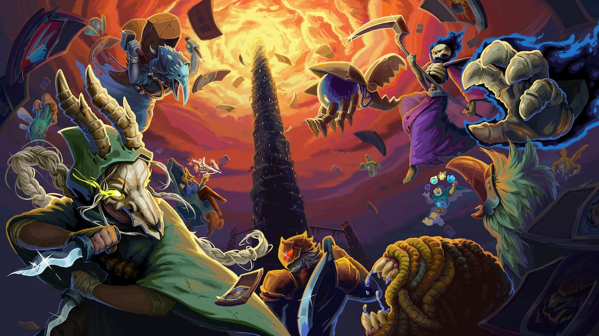
Basically a board game as a video game, although the video game part came first. This game pioneered the "deck building rougelite" genre that is still popular to this day. It's also one of those games that doesn't require a beefy computer to play, and is even playable at framerates that other games stop being playable at, as it doesn't require quick reflexes, just your brains.
Image Attribution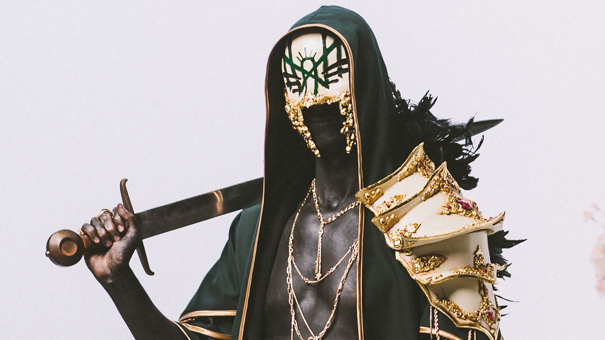
A british band who choose to keep their identities hidden so their music hits harder. Absolutely refuses to pick a genre stick with it, yet the genres they choose mix so well. Anthony Fantano hates them, but since when did his opinion matter?
Image AttributionA canadian band who are way nicer than they look, I'm sure. Their lead singer has a beautiful voice, but doesn't always elect to use it, instead, screaming her lungs to shreds with an impressive vocal range.
Image Attribution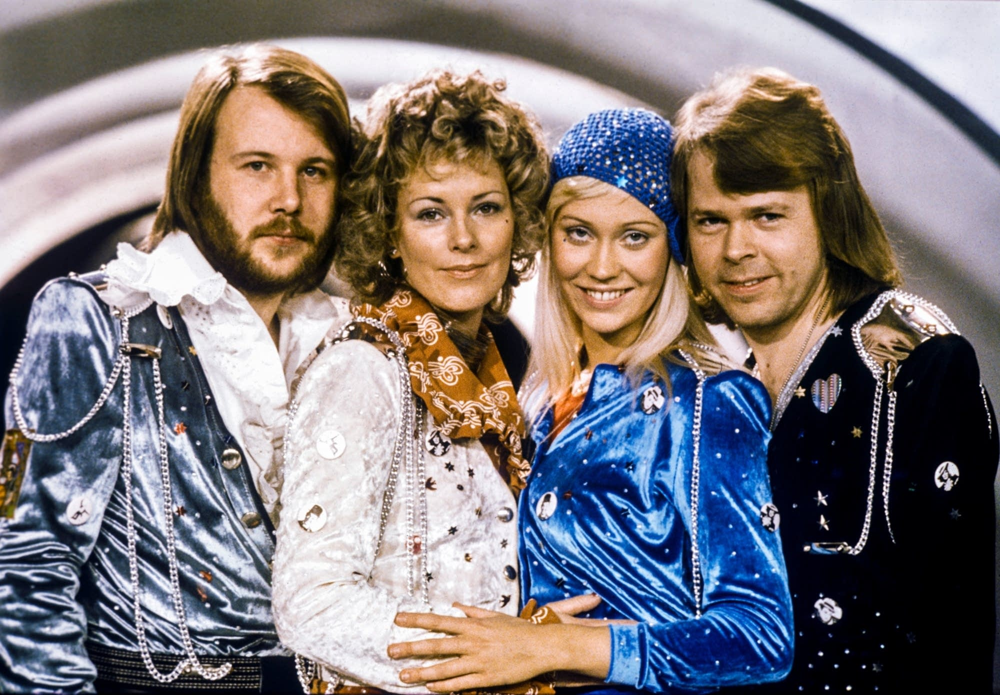
Haha you thought it was just going to be metal bands? I'm more unique than that, I swear. A classic band hailing from the 80s, and still going strong, although their vocals have degraded with age. Aren't I supposed to be saying what's good about these bands?
Image Attribution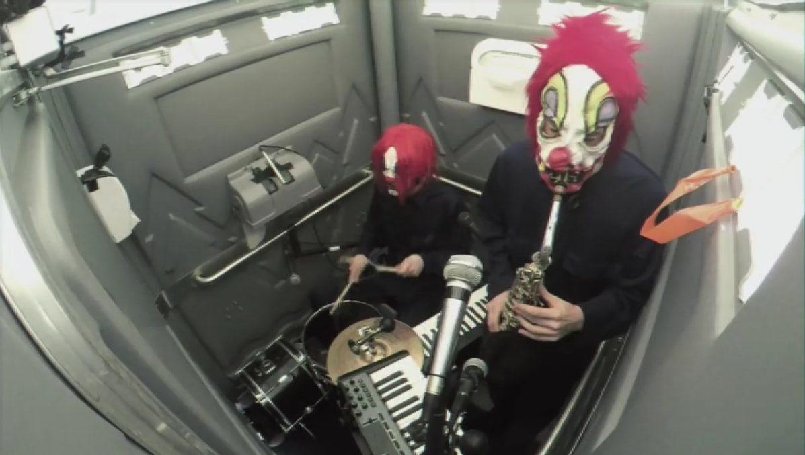
No comment.
Image AttributionA white man who looks like a white supremacist, but really isn't. His scream could rip you to shreds, and with his Devin Townsend Project band, varies his music by collaborating with different musicians for a different feeling album each time.
Image AttributionThe master of making music feel like something unique and out of this world, Hans' music is the base that a great movie or video game is built off of. I like to call him the "Modern John Williams", as I see their music as fundamentally related, and John Williams is old anyway, so someone needs to continue his legacy.
Image AttributionWould you look at that? Here he is. The man himself. The architect of some of the most recognizable soundtracks to date, and master of the conductor's stick. He's old, but still very much capable of making bangers to this day, as while the Star Wars Sequels may have been shit, their soundtracks were far more memorable than the actual movies themselves.
Image Attribution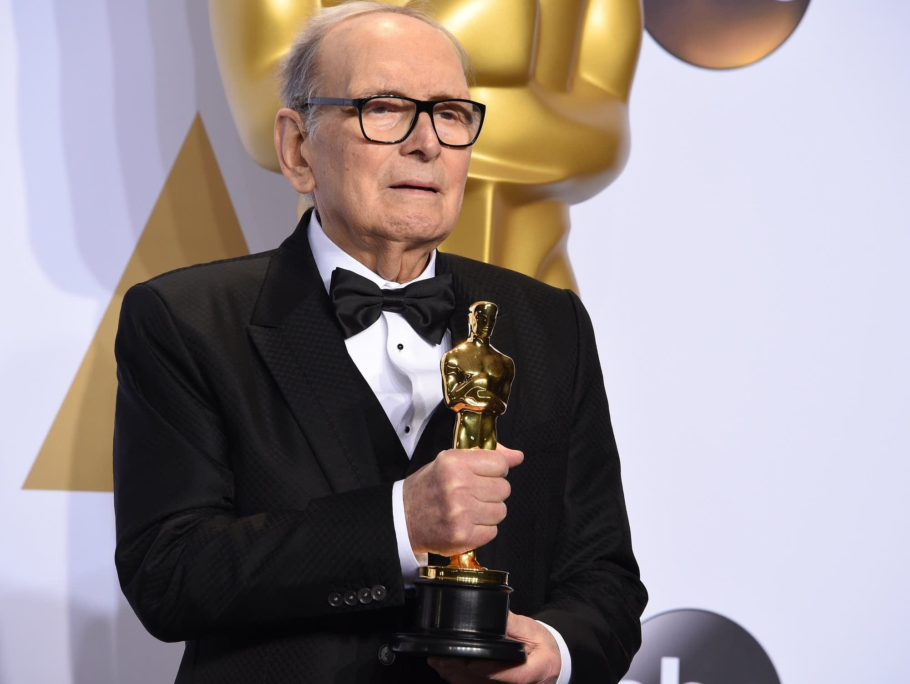
The rich bastard who's dead now. Despite his death, his music is still popular to this day, with his soundtracks for movies like "The Good, The Bad, And The Ugly" still popular to this day and forever associated with The Wild West.
Image AttributionThe absolute goober who looks different in every photo and video that's taken of him. After having the fever dream in 2011-2012 that made his career, he's been given an avenue for his music to be shared via the video games Undertale and Deltarune, discussed above. He can tell an entire story with just a single song, with every little detail being a deliberate thing to build up a story via sound.
Image Attribution